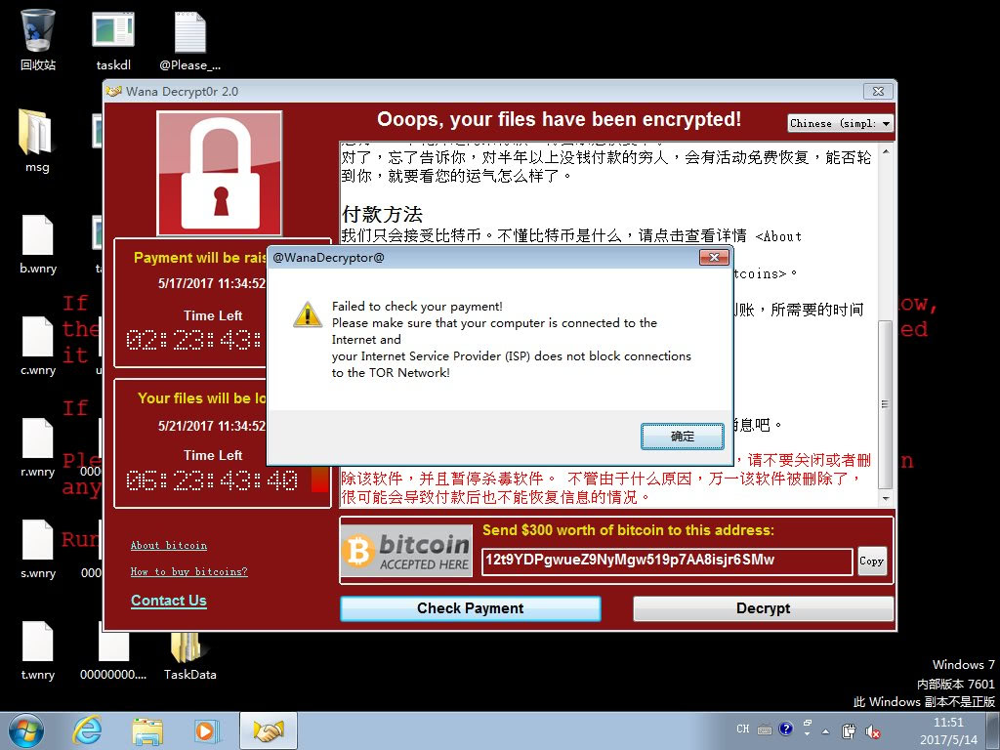
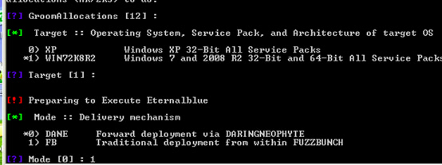
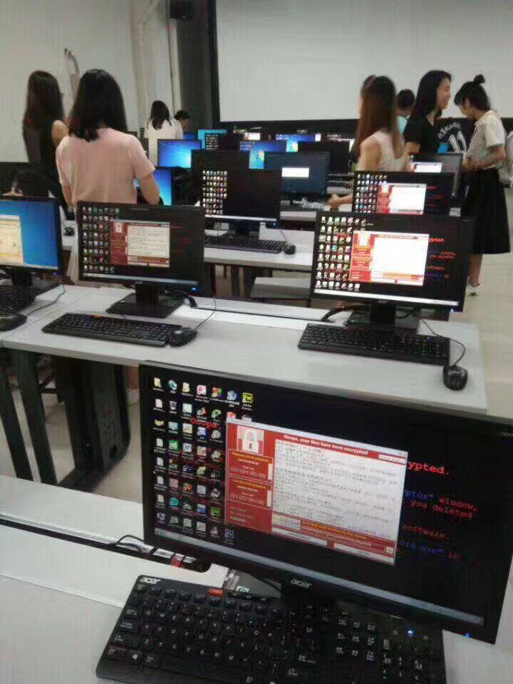
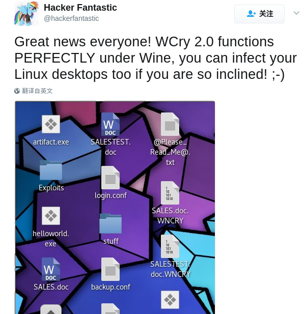
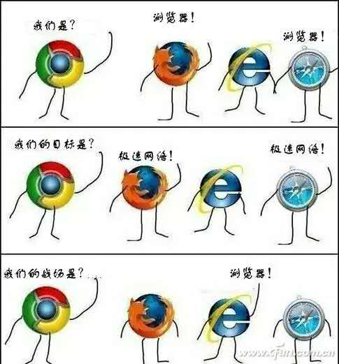
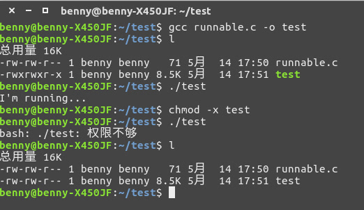

Wanna Cry勒索病毒事件随想
文章目录
这波WannaCry可能过去了，但是据安全人员研究称，新的一波EternalRocks即将到来，现阶段此蠕虫没有采取勒索行为而是试图创建僵尸网络。不同于WannaCry只使用了Eternalblue，EternalRocks使用了NSA的SMB漏洞利用程序EternalBlue, EternalChampion, EternalRomance,EternalSynergy，还有相关的程序DoublePulsar（用于注入dll或者运行shellcode）, ArchiTouch（判断目标系统的架构）SmbTouch（判断可以被利用的SMB漏洞）。
我们……不哭，起来，再撸
根据EternalBlue的说明，目前可以受到攻击的系统有XP、Server 2008和Windows7；我今早测试貌似Windows 10（1511）不受此漏洞的影响，可能是我测试方法有误，但是依旧小心为妙吧！
关注本博客的朋友们可能会发现，三个多星期之前我根据歪果仁的论文写了一篇《使用EternalBlue, doublepulsar, metasploit渗透Windows》的文章，那时候ShadowBroker刚刚公布NSA黑客工具一个星期，MS17-010都公布接近一个月了。没想到一个月之后，竟然有人根据这漏洞搞出来蠕虫大规模入侵内网（那个……我拿着08年的netapi也干了不少事），同时又看到很多哭笑不得的言论，什么别以为Mac就安全了什么Linux的。童鞋们啊，多读书，尽可能的进行批判性思维和独立思考真的很重要啊。
由于本文主要会集中讨论一下Windows和Linux的问题，这就好像问一个程序员，你是用vim还是Emacs，jihad啊！所以，我会尽量避免这些问题，争取避免片面思维。
咱本篇主要讨论的是服务器和桌面的Windows与Linux，当然在开始之前，咱们有必要普及几个技术术语，毕竟，咱的写作目标是科普嘛！
啥是比特币
不同于一般货币拥有载体（实物）、中央发行机构，比特币是一种没有载体（实物）的、没有发行机构的、去中心化电子货币。由于其采用密码技术来控制货币的生产和转移，而没有中央的发行机构，无法任意增发，交易由整个网络进行验证，因此比特币也被认为是一种电子加密货币 ，由于其有特殊的隐秘性，加上不必经过第三方金融机构，因此除了重视隐私的用户外，也经常被拿来当作非法交易的媒介，比如说在暗网上干点坏事啦，都是用比特币的。
使用比特币最大的特点就是很难溯源，在技术层面上你不知道这个比特币账户背后的人究竟是谁，因此也特别适合那些“黑客们”。
比特币有多值钱呢？现在1比特币已经大概等值于1700USD了，挺值钱的，要是我在初中的时候知道这东西搞几个就好了……
啥是勒索病毒
就是吧，有一种恶意的计算机程序，它控制你的电脑之后，会用某种加密算法加密你的部分甚至是全部文件，之后向你索要赎金来解密；类似的事情不仅发生在桌面、服务器上，有些数据库被脱下来之后也会这样索要比特币。
由于密码学的一些原因，咱想不交钱解密可能比较难（咱不会逆向，不过咱可以想万一这个病毒制作者的加密密钥是硬编码在软件中的呢，应该没这么智障吧），所以咱要支付赎金吗？当然不要了，那不是助纣为虐么！谁敢保证“黑客”一定会有良心！话说回来，那勒索工具需要Tor？那完了哈哈哈还得挂代理啊真是悲剧；中文版据说是Google Translate的？Google Translate这么牛逼了？

需要tor才能解密，来源陈少举Twitter
在一两年前我还玩新浪微博的时候，看到字幕组里一个人的朋友的电脑被这样的病毒搞了，应该使用了巨慢无比的RSA，哎，看来这事还是层出不穷呢。
EternalBlue又是个啥
就是嘛，美国有一个巨牛逼巨可恶的机构叫做NSA国家安全局，对就是爆光棱镜计划的主角斯诺登曾经就职的那个地方；说NSA巨牛逼是因为NSA技术实力其实蛮强的，说NSA巨可恶是因为他们净想着以各种名义来做各种侵犯人权的事情。话说有另一个黑客组织叫影子经纪人（The Shadow Brokers ），他们竟然从NSA手里吧Equation Group的黑客工具偷出来了。那堆黑客工具中有一系列叫做Eternal啥的，包括EternalBlue，EternalRomance，EternalRomance啥的，听这名咱就能直到NSA那群人是多么的骄傲啊竟然把这玩意叫Eternal永恒的？
在这对工具中啊最好用的基本上就是EternalBlue了，EternalBlue可以通过开放445端口（提供SMB服务，SMB是啥？简单理解你在网上邻居里看到同局域网的电脑那就算SMB好吧）来远程执行代码，其中可以被入侵的目标包括XP、Server 2008/7，咦竟然没有Server 2003？没事咱有ms08-067的netapi啊……

总结就是一句话，EternalBlue非常强大，强大到只要知道一个IP地址就能够植入后门，颇有当年ms08-067的风范啊……
啥是零日漏洞（0day）、未公开漏洞
咱字幕组做字幕啊，分成好几种，一种叫0day，就是当天必须翻译完压制完的；还有1day，就是第二天翻译完。类比下，假如某个系统的某个漏洞的细节被公开，他们可以在24小时之内制作出相应的攻击代码。而这个时候，软件厂商多半还没来得及发布补丁。那么这些攻击者就可以利用这个时间差，进行入侵活动。所以，这种漏洞称为“零日漏洞”（Zero-Day, 0-Day）。
类似0day有一种说法叫做“未公开漏洞”，这俩概念比较接近，“零日漏洞”可利用的时间段会短一些，比较负责任的软件厂商通常会比较快发布补丁（当然也有例外，比如那个Oracle啊）；未公开漏洞就是没公开给厂商、但是却有漏洞利用程序的，咱可以说NSA这堆在没被公开之前就属于未公开漏洞。
咱能发现，未公开漏洞要危险的多。NSA在2011年就有了这堆工具(根据文件的时间戳)，这都17年了，想想就可怕。
好了咱说了一大堆啥是，大概让大家对背景有了些了解。
勒索病毒是咋扩散的这么快的啊
鉴于巨硬的Windows 7是如此成功、优秀的一款操作系统，大家应该都使用过吧？但是很多人应该发现只要自己那么一关机啊，它就给你更新更新更新，有的时候还更新失败，巨烦无比！在Windows 10上这个问题貌似得到了一些改善。所以呐有很多人，为了防止被这个更新折磨致死，就把它关掉了（坦言我也曾经给自己的自动更新关掉），于是乎巨硬推送的安全更新就不会自动安装了，恰巧SMB默认是开启的、EternalBlue攻击执行远程代码成功率奇高，在加上很多政府组织、公司、学校内网的Windows配置都是一样的，网管还很懒，这天时地利人和加一起就导致了像传染病一样的传播。

被攻击的学校机房，来源猫箱内の巴托拉-BattlerHenry
提到政府组织、公司、学校的安全策略，其实有一些会对外来攻击防范的比较好，但是对于内网发起的攻击却不那么在乎；有些则是内外都不在乎，比如说我学校，网管懒死了！
Linux对于此次病毒攻击的防范
据国外安全研究人员报道，此病毒的变种版本2.0可以在wine下感染文件，但是还请各位Linux用户放心……原因待我一一道来。

图片来源：Hacker Fantasic称
原因之一：wine/Linux默认不带有smb服务
原因之二：就算带，EternalBlue也只是针对有漏洞的smb实现发起攻击（7/2008/XP）
以上两个原因就已经能够保证Linux就像打了疫苗一样对病毒的传播是免疫的，但是哪怕某个用户脑残在Linux下收到了病毒的exe、并且还装有wine、并且还双击了……
原因之三：wine的一些对于Windows API、dll不完善的封装可能会导致某些版本的病毒运行失败
找不到入口点，无法加载某个dll，唉，当个病毒也不容易啊。
原因之四：退一步讲，wine只对~有读写权限，万一走了狗屎运也只是自己的~被加密
默认wine会把~/.wine/driver_c映射为C盘，把/映射为Z盘，然而普通用户对/没有w权限，用root权限运行wine的当我啥也没说。
所以总结这四个原因就是，Linux对此病毒的传染是免疫的、哪怕此病毒破坏力再强再跨平台，只要你不运行，那就没事……这就好似某人发明了一款蟑螂药，管它美洲蟑螂还是火星机械蟑螂吃了肯定会死，但是你得掰开蟑螂嘴喂它才行……???
请注意，5月26日，Samba近日发布了4.6.4版本，该版本修复了一个严重的远程代码执行漏洞（漏洞编号：CVE-2017-7494），Samba 3.5.0 和包括4.6.4/4.5.10/4.4.14中间的版本均在受影响之列
先谈谈预防措施
值得庆幸的是，我所在的学校并没有被此次蠕虫波及（但是我学校的网络安全防护差到不敢想想），昨天也发现身边的一些朋友在分享这条消息。然而我敢打赌，大家都是看完了就看完了就像看了笑话一样以为一切和自己毫无关系，很少有人会立刻开电脑进行安全加固吧？所以万万不可掉以轻心，EternalBlue成功率高到可以手动十分钟一台……
所以至少要未雨绸缪嘛，羊还没丢啊！我们需要做的事情的安装ms17-010安全更新（巨硬都给XP和2003这个更新了），关闭SMB服务，养成备份文件的好习惯。
当然了那些使用Mac（并且安装使用的是OS X）、Linux发行版的用户就别管了，与你们无关。
说句题外话，昨天我从外面回来，室友忧心忡忡的问我：这个没事吧我都不敢连锐捷了。我说你别急，等我扫下你的电脑看看开没开445哈……
已经中招了咋办
那些已经中招的小伙伴，唉，一定不要交赎金啊，还得带tor，目前根据一些安全人员的逆向研究，也没啥太管用的恢复文件的办法，也不知道这玩意变异了几个版本，目前我搜集到的稍微靠谱点的信息有：
1.使用数据恢复工具恢复文件（因为这家伙是在内存中加密再删除源文件的），至于用其他人的比特币记录忽悠始作俑者，还是算了吧……
2.XP用户可以试试一个安全人员利用XP中CryptoAPI实现缺陷来取得加密密钥，戳我
好哒，咱说了这么多题外话，终于到转入正题了，为啥无论是在桌面上还是服务器上（甚至是移动设备上），Linux要比Windows在安全性上做的更好啊。当然了，我这样是在引战，Linux也有过dirty cow，OpenSSL也有过heartbleed，但是就如小蜗牛童鞋所言：
若无力驾驭，自由便是负担
为了避免打口水战，咱要提的第一个先决条件就是：适用性
适用性
众所周知，当今世界是一个开放的、经济全球化的世界，想要闭关锁国那是不行滴（包包：啥？）！软件也如此，很多软件现在都开始是跨平台并且设计为i18n，当然也有一些例外，比如说大部分游戏都只有Windows版本的，这咱不能wine一个吧（其实也不是不行……wine2.0能跑使命召唤4你敢信？）
咱所说的适用性就是，有些服务器必须要使用Windows，最常见的就是那些游戏服务器；有些必须要使用Linux，有些则是二者均可。咱要说Linux和Windows都有各自的适用性，只不过在服务器领域，Linux是占有大部分优势的；在桌面领域，Linux的优势似乎没那么大……
咱主要说的就是最后这二者均可的。
安全性
首先咱要知道，Linux就是个内核，只有内核那是不成的，所以还需要套上一大堆东西才能成为今天咱用的发行版。根据包管理器的不同，Linux发行版可以大体分成deb系和rpm系，还有其他的比如Arch、Gentoo啥的。
大家可以戳去维基百科来看看所有发行版的时间线，咱能发现这简直太多太多了好吧。
Linux发行版数量这么多，有啥好处呢？
其一对于咱用户来说，选择的余地太多啦！苦了那些选择纠结症的童鞋
其二，发行版数量多也直接减少了攻击面，不同的发行版，其体系可能会差非常多。预装的软件不同，内核版本也不同，甚至是内核的编译参数、运行参数都不同，你这让攻击者情何以堪啊——目标都无法确定攻击个毛啊。
相反咱看看Windows，总共也就那么几个版本，像Windows 7有Professional、Home、Ultimate，反正双手双脚大概是差不多输得过来了，尽管数的过来，但实际上这些版本是没啥差别的。为啥呢？因为Windows的核心组件都是基本不变的，比如这几个版本都有IE，那个巨慢无比漏洞百出的IE。

被嘲讽的IE，来源见水印
Linux发行版的可定制性
咱说，Linux非常灵活、简洁，咱可以重新编译内核来去掉很多用不到的模块，咱可以删掉很多用不到的软件包，这样就直接减小了攻击面。活这么大，我还没听说过谁能够自己编译Windows的内核呢，Mac OS的内核虽说也是开源的，但是想要自己编译，似乎还是有些难度的。
Linux发行版对于硬件的丰富支持
《计算机原理》没挂科的童鞋们大概知道CPU有很多架构吧，什么x86啊，x86_64啊，ARM啊，MIPS啊，PowerPC啊……反正是超多CPU架构的，Windows可没有这么多。
支持这么多、对于安全性来说，有啥好处呢？不知道大家是否听过这样的新闻：XX处理器爆出XXX漏洞，硬件漏洞也是可能的。支持的硬件更多可以有效的降低“被盯上”的可能性，这么多谁知道你用的是啥处理器嘛。
Linux用户更小众
我相信所有人都会一致认为，在桌面上，三大系统使用率是Windows>Mac OS>>Linux，所以这也避免了“树大招风”的效应。毕竟，如果想要开发对应的漏洞利用程序，就要付出更多的资源来针对使用率最广泛的系统，也就是Windows咯。
不过一定要注意，桌面Linux之所以要安全，用户数量少只是其中的原因之一，Linux的安全是从本质上优越于Windows的。全球Linux（包括服务器和桌面）用户可不少，Android的用户量早就超过了Windows，可是Android和Linux可并没有像Windows那样病毒泛滥成灾，所以千万不要犯本末倒置的逻辑谬误。
Linux有完善的包管理器机制
大家在用Windows的时候，是咋么安装软件的，肯定是这么几个步骤吧：打开百度啥，搜索XX软件，从广告中分辨出真正的官方网站，到某个网站，从广告中分辨出真实的下载地址，下载，安装，使用。
上述步骤中可能存在有非常多的问题，比如说：万一你去的网站不是https的，下载链接被劫持了呢？万一那个网站本身就给加了后门啥的呢？（参见XGhost Code事件）
还有一点，Windows下有些软件的自动更新也存在一些问题，有些的自动更新渠道不是加密的、并且不会对下载之后的文件进行校验，大名鼎鼎的黑暗幽灵是怎么来的，嘿嘿。
烦死人了嘛！但是在Linux下，咱不用这么做，因为有软件包管理器啊，软件包管理器有啥好处呢，除了方便快捷之外？
安全的签名机制：咱不用担心源里面的软件是被篡改的、下载过程中被篡改了，它会直接拒绝安装。因为完善的包管理器都会有一些机制来校验，有些是使用散列函数、有些是数字签名，有些是这二者结合。
升级更新机制：当软件包的维护者开发完新的版本并测试之后（可能是功能更新，可能是bug fix，也可能是安全更新），他可以把新的版本推送到源，包管理器也会有对应的自动更新机制（尤其是服务器版）。咱晓得，使系统随时保持最新状态可以集大程度降低被攻击的风险
Linux的文件权限遏制了病毒的扩散
话说土豆我当初在学习Linux的时候，最头疼的问题就是，rwx权限有毛用啊！更别提还有suid、sgid、sticky bit了，简直头疼。那时候我还年轻呐！
呐，咱知道，在Windows下，一个程序能不能运行，是看扩展名滴！只要扩展名是exe那么就是能够运行的（这里的能够运行是指的操作系统能够给它可执行的能力，而不是能否工作，咱把一个txt改成exe当然是没办法运行出来hello world的），不知道大家中没中过U盘病毒啊嘻嘻嘻。
但是在Linux下，一个程序能不能运行是靠的x权限的，扩展名并不是判定因素。再由于默认的umask是022，本来一个文件就是没有x权限的了，唉~

没有x权限，你是运行不了滴！咦，暴露了我电脑型号。
还有一些其他的有助于Linux安全的因素，比如说开源有助于安全审查，社区维护可以避免商业公司侵犯用户隐私，这里就不提了。
不过，咱得说，Linux也曾经爆出过很多非常严重的漏洞，包括其他的一些非常关键的开源项目（比如说OpenSSL）也爆出过漏洞。但是咱得承认，Windows漏洞的修复速度、漏洞潜伏期往往都比较慢的……
价格
没错哒，那么多发行版基本上咱都可以拿来免费用，不用给他们一毛钱！呐，有人也许会问，那些靠着发行版活着的商业公司是怎么赚钱的啊？软件免费，服务收钱呗~
因为开源的性质，有很多发行版都适合做服务器，而Windows服务器是要给微软交钱的，所以你能看到国外有些vps, Windows服务器比Linux贵个几块钱（不过腾讯云是个例外哈哈哈赚它30G硬盘）
稳定性、操作性、高性能
Linux比较稳定，跑几个月甚至几年都不会挂也不需要重启，而且KISS：简洁，自定义程度高，更节约资源更高效，信不信我rm /bin/rm给你看?
服务器版的Linux都没有桌面环境，更节约内存，Windows的桌面环境怎么也得要二三百兆内存吧，而且Linux有很强大的shell，shell就能搞定一切，而管理Windows服务器则需要远程桌面，你再瞅瞅Windows的那个cmd..虽说微软新搞的powershell很强大，但是学习成本有点高。
文件系统的性能上ext4, btrfs, xfs都比Windows的NTFS好太多啦
Linux对硬件要求很低，而且也支持更多的CPU架构不用多大内存多大硬盘，有的在128M，64M内存都跑的起来(不信你搜搜puppy Linux, tiny core Linux人家还带桌面环境)，咱甚至可以通过重新编译内核等途径，精简不需要的模块来达到更好的效果，整体而言Linux的耦合度比较低，很多没必要的东西都能删掉，也照样跑的起来。而Windows是不可能做到这一点的，Windows的组件几乎都是没有选择的只能全装(比如说漏洞百出的IE，耦合度高的Windows自己都离不开)，再怎么精简也得是几百兆出头吧。
对于硬件要求低，在服务器上这一点优势更明显，咱家用PC可能都是GB级别的内存，但是服务器上多1G的内存就要多不少钱呢！干嘛要把本来就很珍贵的内存用来跑GUI呢，是吧！就算都跑GUI，咱还有LXDE、Xface这类轻量级的桌面环境可以选择嘛，照样虐杀瘟斗士。
维护性
升级维护方面 Linux发行版都有包管理器，所以各种包很容易升级到最新版本。而且很多发行版都弱化版本号而采用滚动发行的概念(那些不滚动的很多也都有用某个命令就可以升级到下一个LTS)，比如Arch、Kali，你再想想要是把server 2008升级成12，不得累死人
还有一点就是，Windows更改了配置啥的，很多情况下都得重启才行，但是Linux基本不用，有很多东西直接是修改内核参数的。甚至一些商业公司(redhat啊canonical)提供热补丁，不重启就能patch内核。
标准和一些乱七八糟的
呐，POSIX啊，咱比如说Linux都是用UTF-8的，全球通用，但是Windows就不是了，简体中文版是gbk,繁体中文是big5等等跟着不同语言版本的locale来的。UTF-8还给加个BOM，怪胎啊。
当然了……
最近这几年，Windows也有了很大的改进，比如支持WSL，微软也开始拥抱开源，甚至收购了GitHub。一些娱乐性需求，Windows还是很吃香的🙂是不是
随想与总结
介绍了这么多Linux的优点，其实避而不谈了一些缺点，比如说字体可能会有些问题（随着文泉驿、思源宋体等开源字体的发展，这个问题已经越来越少见了）、入门门槛比较高、某些桌面环境操作习惯不同、某些桌面环境兼容性稳定性有问题、娱乐游戏比较少，总之很多吧。但是呢，
对待这次蠕虫事件，咱得说遇见了好些逻辑谬误：本末倒置的以用户量多少作为衡量安全性的标准、阴谋论认为这是微软的阴谋等等、片面性的认为Linux使用范围只有服务器、打稻草人转移话题等等，俺是真的懒得说了……
本站默认采用CC-BY-NC-SA 4.0协议进行授权 转载必须包含本声明，并以超链接形式注明原作者和本文原始地址


评论
22 条评论